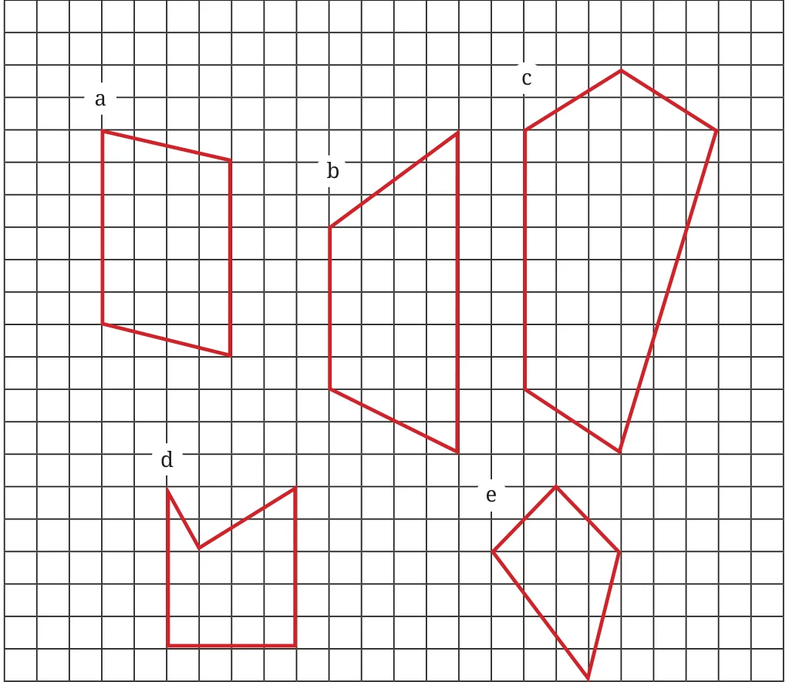
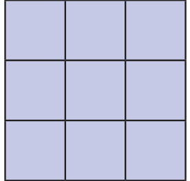
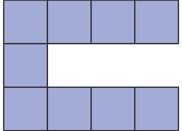
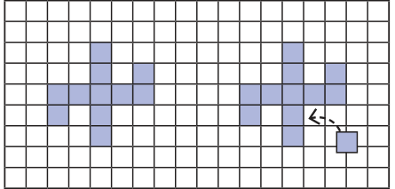
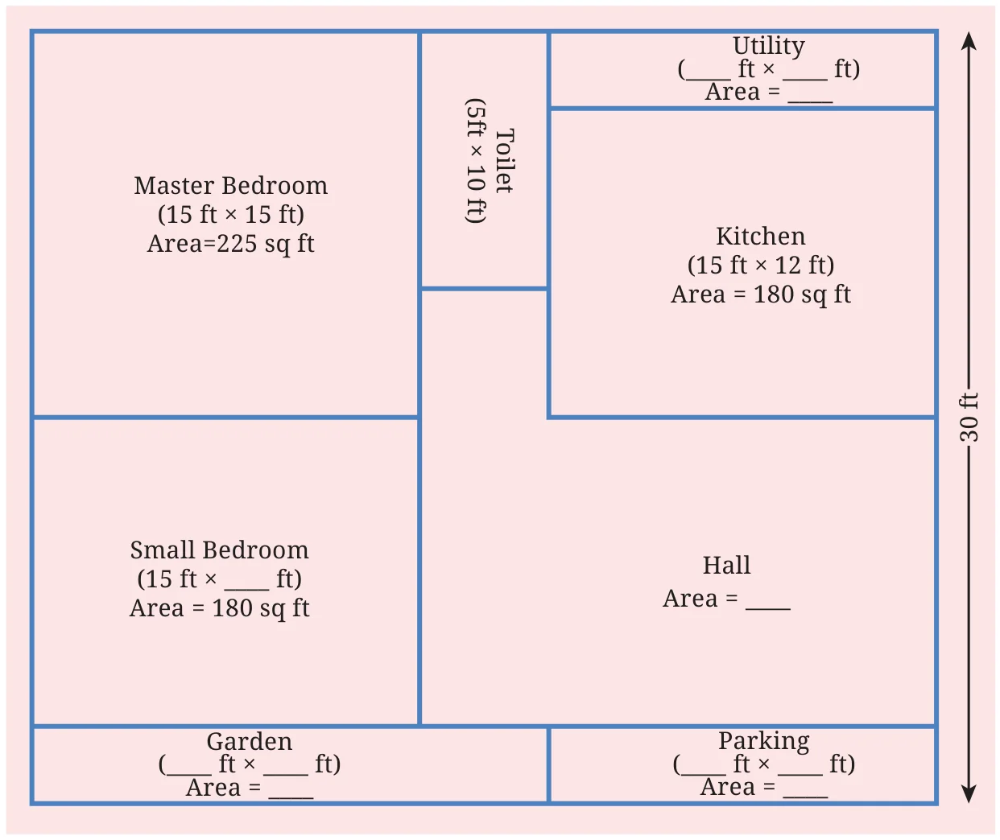
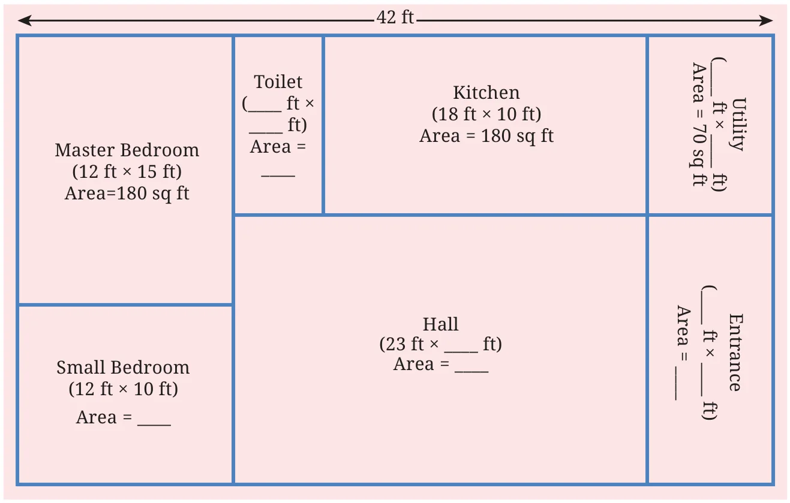
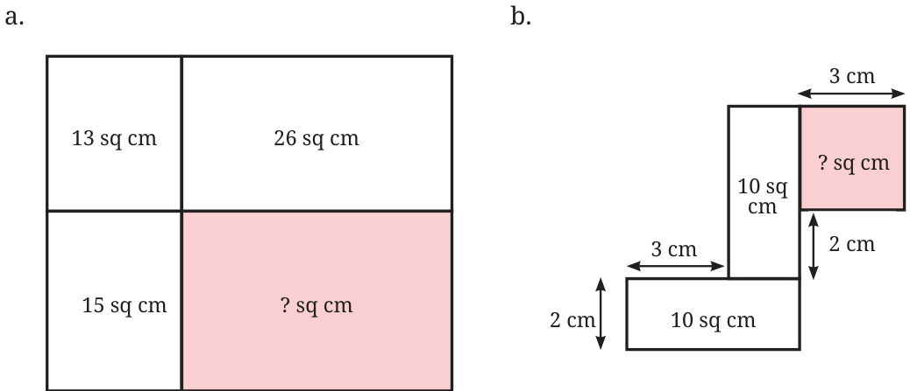
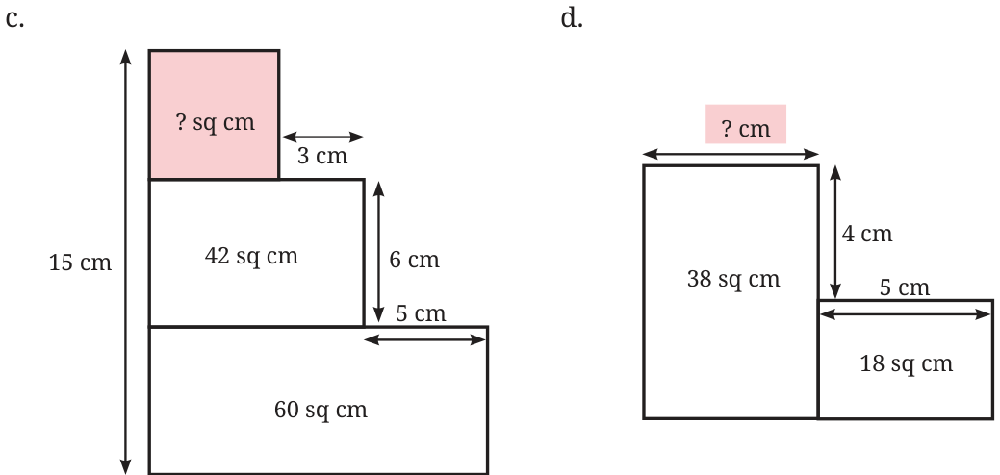

- Find the areas of the figures below by dividing them into rectangles and triangles.

Making it ‘More’ or ‘Less’
Observe these two figures. Is there any similarity or difference between the two?


Using 9 unit squares (having an area of 9 sq units), we have made figures with two different perimeters—the first figure has a perimeter of 12 units and the second has a perimeter of 20 units. Arrange or draw different figures with 9 sq units to get other perimeters. Each square should align with at least one other square on at least one side completely and together all squares should form a single connected figure with no holes. Using 9 unit squares, solve the following.
- What is the smallest perimeter possible?
- What is the largest perimeter possible?
- Make a figure with a perimeter of 18 units.
- Can you make other shaped figures for each of the above three perimeters, or is there only one shape with that perimeter? What is your reasoning?
Let’s do something tricky now! We have a figure below having perimeter 24 units. Without calculating all over again, observe, think and find out what will be the change in the perimeter if a new square is attached as shown on the right.

Experiment placing this new square at different places and think what the change in perimeter will be. Can you place the square so that the perimeter: a) increases; b) decreases; c) stays the same?
Below is the house plan of Charan. It is in a rectangular plot. Look at the plan. What do you notice?

Some of the measurements are given.
- Find the missing measurements.
- Find out the area of his house.
Now, find out the missing dimensions and area of Sharan’s home. Below is the plan:

Some of the measurements are given.
- Find the missing measurements.
- Find out the area of his house.
What are the dimensions of all the different rooms in Sharan’s house? Compare the areas and perimeters of Sharan’s house and Charan’s house.
Area Maze Puzzles
In each figure, find the missing value of either the length of a side or the area of a region.

